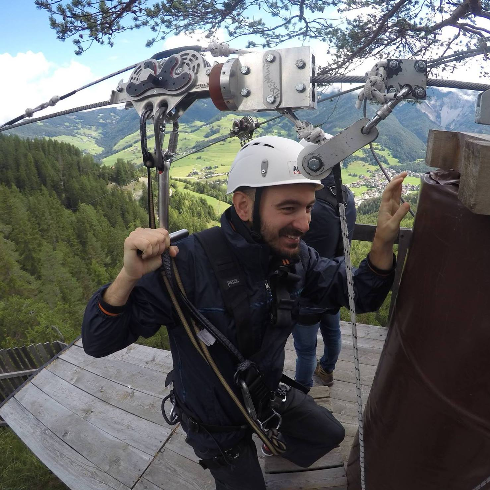

Antonio Trentin
trentin.antonio@hotmail.it
Visualizza il mio profilo GitHub
Sono Antonio, veneziano d.o.c.g. e romano d'adozione. Ho 42 anni, un labrador marrone da cui non mi separo mai e dai tempi del Commodore 64 una passione per tutto ciò che è web-related. Una passione che dopo circa vent'anni di lavoro in tutt'altro settore, mi ha portato a rimettermi in gioco e provare a rinascere come sviluppatore web.
Le poche volte che riesco a spegnere il pc (ve l'ho detto che è una passione..) mi butto a capofitto nell'attività sportiva. Non riesco a privarmi della settimana bianca sulle Dolomiti, che rimangono un pezzo del mio cuore da buon veneto, e amo fare trekking in estate con la mia quattrozampe al mio fianco. Per quanto stancante, una volta arrivati in cima c'è sempre un buon panino con la soppressa e un'ombra di vino rosso in malga, e la motivazione non manca mai.
Sono una persona a cui non piace parlare di se stesso, quindi scrivere queste 3 righe mi mette veramente in difficoltà!
Mi viene solo da dire che mi ritrovo poco in quell'idea che spesso hanno i miei amici romani dei nordici. Sono estremamente socievole e ciarliero (come dice la mia compagna parlo pure con i sassi) e soffro terribilmente il freddo (e si, il meteo romano batte quello veneziano 5-1)...
Io lo dico sempre che avete un'idea sbagliata dei nordici? 😜
Le mie competenze
- Adobe Photoshop
- CorelDraw
Competenze da acquisire
- HTML/CSS
- Javascript
- SEO
- Angular
Istruzione
| Scuola | Indirizzo | Anno | Città |
|---|---|---|---|
| I.T.I. A.B. Nobel | Diploma Perito Informatico | 2004 | Roma |
Esperienze Professionali
| Azienda | Mansione | Periodo | Città |
|---|---|---|---|
| Micoud srl | Operatore fotolitografico | 2002 - 2021 | Venezia |